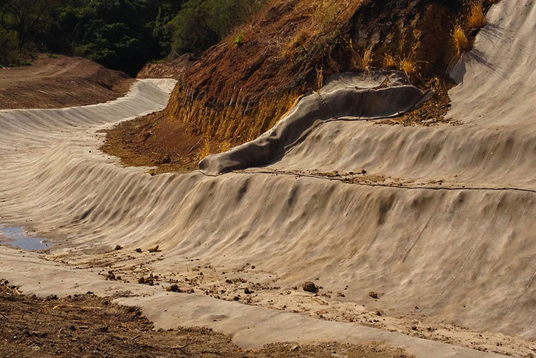
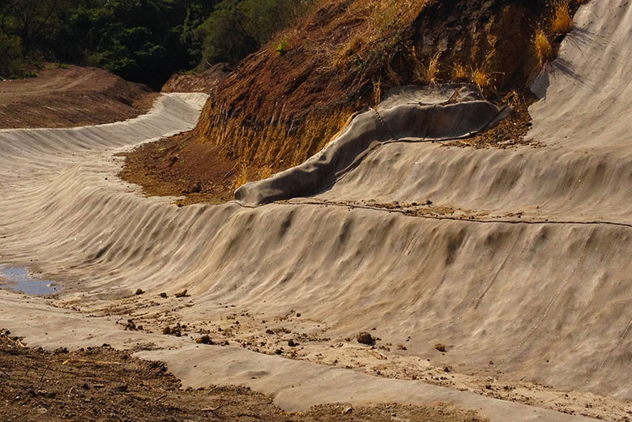

Москва. Центральный офис
Представительство в UK


 



о компании
Революционное изобретение
История компании Concrete Canvas Ltd. началась с революционного изобретения. В 2000-х годах два британских студента, проходившие обучение по специальности «Технологии индустриального дизайна» в Королевском колледже искусств, Питер Брейвен (Peter Brewin) и Уилл Кроуфорд (Will Crawford), разработали инновационную строительную технологию. Они предложили использовать для футеровки поверхностей бетонное полотно – пропитанную сухим раствором ткань с непромокаемой подкладкой.
Для производства этого полотна в 2005 году была создана компания Concrete Canvas Ltd.
Международное признание
Эксперты строительного рынка очень быстро поняли, какие широкие возможности открывает полотно Concrete Canvas и какими значительными преимуществами оно обладает по сравнению с традиционными подходами к футеровке, например с торкретированием или заливкой раствора.
Результатом высоких экспертных оценок стали многочисленные престижные международные премии и награды, которые бетонное полотно продолжает получать по сей день.
Стремительное развитие
Высокие оценки экспертов вызвали интерес лидеров мирового строительного рынка, то есть реальных заказчиков. Многие из них провели пробную укладку полотна и оказались полностью удовлетворены полученными результатами. Закономерным итогом стали постоянные заказы на продукцию Concrete Canvas Ltd.
В настоящий момент среди заказчиков бетонного полотна имеются как частные, так и государственные компании. В их числе Skanska, BAM Nuttall, Costain Group, Carillion, Balfour Beatty, Morgan Sindall, Trant, Enterprisemouchel, Morrison Construction, AMCO, Murphy Group, Dyer & Butler, Amey Colas, J Breheny Contractors, Raymond Brown, Network Rail, Highways Agency, The Environment Agency, Vale.
Широкий экспорт
Бетонное полотно вызвало интерес подрядчиков не только в странах Евросоюза, но и далеко за его пределами. Сегодня география поставок продукции Concrete Canvas Ltd. охватывает практически весь мир. Она применяется более чем в 40 странах мира, и число их постоянно увеличивается. За пределами Великобритании крупнейшими рынками являются Бразилия, Чили, Россия, Австралия, Индонезия и страны Ближнего Востока.
Экспорт бетонного полотна составляет
65-85%
товарооборота
Concrete Canvas Ltd
Ключевые рынки
Ключевыми направлениями, на которые ориентирована компания Concrete Canvas Ltd, являются дорожное строительство, железные дороги, горнодобывающая и нефтехимическая промышленность. В этих сферах бетонное полотно находит самое широкое применение – от футеровки дренажных канав до укрепления склонов, дамб и водохранилищ.
Теперь в России
Учитывая объемы добычи нефти, газа и других полезных ископаемых в нашей стране, протяженность российских железных дорог, а также темпы и масштабы дорожного строительства, Concrete Canvas Ltd. оценивает Россию как один из самых перспективных рынков. На этой оценке сказывается и тот факт, что большинство российских месторождений сосредоточено в удаленных регионах со сложными климатическими и природными условиями, куда затруднена поставка традиционных строительных материалов.
Пилотными проектами по применению бетонного полотна Concrete Canvas в России стали аэропорт, обслуживающий алмазный карьер «Мир» в Якутии, и береговой комплекс подготовки «Чайво» на Сахалине.
Поставками бетонного полотна на территории России и стран СНГ, а также консультированием по его применению и монтажу занимается компания United Concrete Canvas Russia — официальный партнер британской компании Concrete Canvas Ltd.